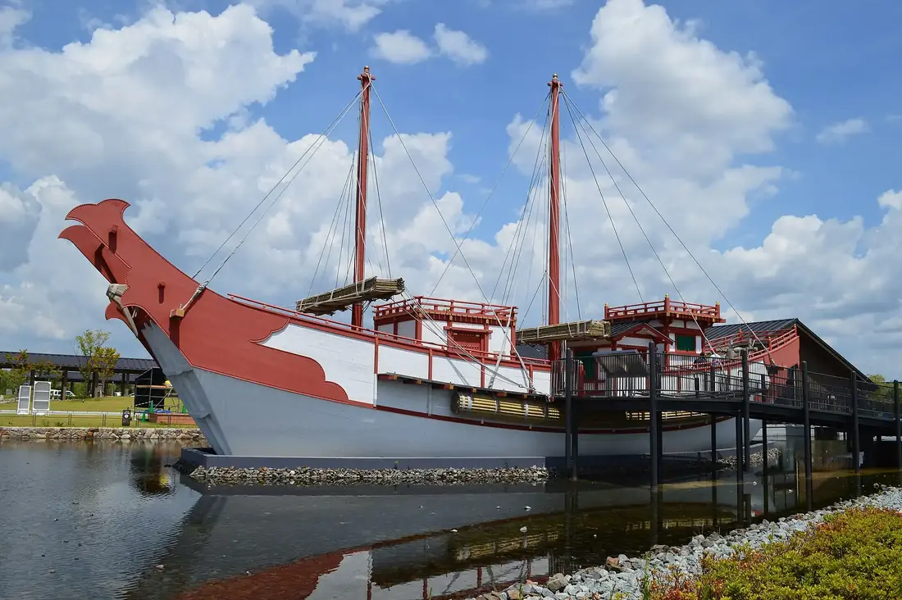
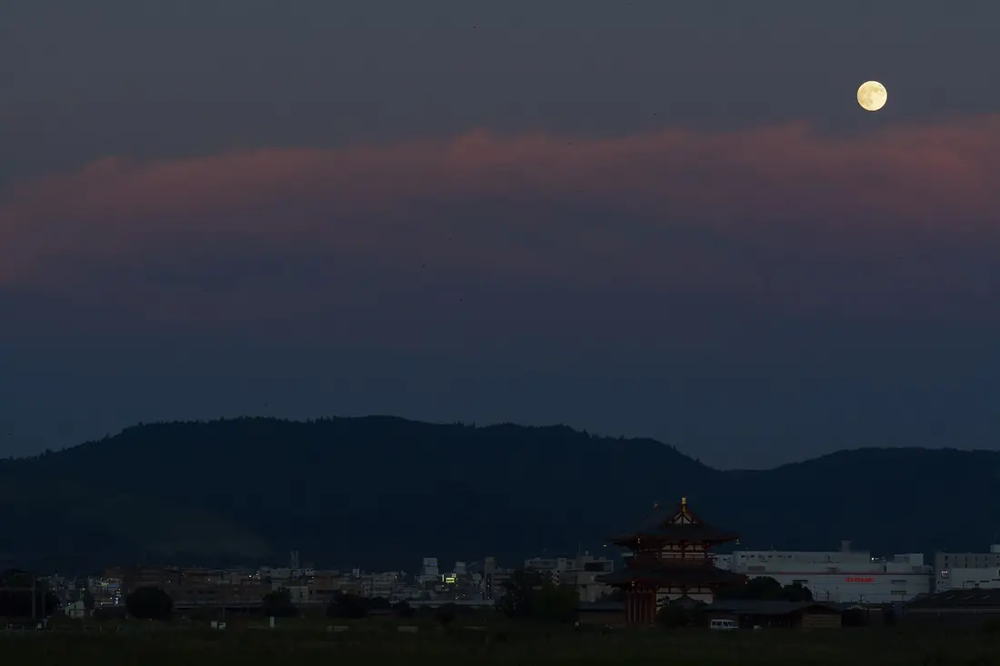

朝堂院（ライブ会場）
奈良時代に官人たちが並び、元日の儀式や政務を行った国の中枢です。聖武天皇や光明皇后が見ていた広場に、今度は自分が立ちます。
ずとまよ＆古代史の旅
令和八年 十月十日〜十二日
令和八年十月 奈良にて
ずとまよ＆古代史の旅
10/10（土）〜10/12（月・祝）の2泊3日。
1日目は平城宮跡でずとまよのライブ、
2・3日目はレンタカーで西ノ京・斑鳩・葛城・飛鳥を回り、
最終日17:00にJR奈良駅へ戻ります。
出発まで あと 8 日
journey
訪れる順に、それぞれの場所の時代を並べました。2日目は奈良時代から神話の時代へさかのぼり、3日目は飛鳥から神話をめぐって、奈良時代、そして今へ戻ってきます。
あをによし
奈良の都は
咲く花の
にほふがごとく
今盛りなり
小野老 万葉集 巻三
film
この旅程から作った2分の予告編です。出てくる写真はすべて、実際に訪れる場所です。音が出ます。
二分二秒 音楽つき
一日目 十月十日（土）
平城宮跡
会場は平城宮跡歴史公園の朝堂院（特設野外会場）。開場15:30、開演17:30、終演は19:45ごろの予定です。
午前
宿はJR奈良駅の近く
10:00〜
昼〜15:00
15:30
17:30
2026年今夜、ここに立つ
19:45ごろ
近鉄新大宮・大和西大寺は徒歩15分だが混雑必至。JR奈良駅まで徒歩約35分
夜
奈良時代に官人たちが並び、元日の儀式や政務を行った国の中枢です。聖武天皇や光明皇后が見ていた広場に、今度は自分が立ちます。
天皇の即位や元日朝賀が行われた宮殿で、2010年に実物大で復原されました。中には高御座があり、入場無料です。

朱雀門は平城宮の正門。朱雀門ひろばには実物大の遣唐使船があり、鑑真や阿倍仲麻呂、吉備真備が命がけで乗った船の大きさを体感できます。

明治時代、田んぼになっていた宮跡を守ろうと、植木職人の棚田嘉十郎が私財を投じて生涯をかけました。この広い野原でライブができるのは、そのおかげです。
二日目 十月十一日（日）
西ノ京・斑鳩・葛城・橿原
9:00にJR奈良駅でレンタカーを借りて南西へ、桜井泊です。この日も平城宮跡でライブ2日目があるので、西ノ京は午前中に抜けます。午後は高鴨神社と神武天皇陵を外して、藤ノ木古墳を足しました。
9:00
9:20
759年鑑真が開く
8:30〜16:30。奈良時代の金堂が残る唯一の寺。奥に鑑真の御廟と苔の庭
歴史ファン的ポイント
金堂は奈良時代の金堂として唯一の現存例です。さらに講堂は、平城宮の「東朝集殿」を移築したもの。平城宮の建物で今も残るのはこれだけなので、1日目の会場とつながります。
10:15
680年天武天皇が発願
9:00〜17:00。1300年前の東塔と真っ赤な西塔を見比べ。唐招提寺から徒歩約10分
歴史ファン的ポイント
天武天皇が皇后（のちの持統天皇）の病気平癒を願って、藤原京に建て始めた寺です。遷都で今の場所に移りました。金堂の薬師三尊は、藤原京から運んだのか平城京で新しく鋳造したのか、明治以来の大論争があります。東塔の先端の水煙には、笛を吹く天人が透かし彫りで表されています。
11:00
1585年創業
1585年創業。お城之口餅は2026年の大河ドラマの主人公・豊臣秀長ゆかり
歴史ファン的ポイント
1585年、豊臣秀長が郡山城に入ったときに納めたのが始まりと伝わります。秀長が主人公の2026年の大河ドラマを見ていれば、その秀長が兄をもてなした味を食べられます。
11:30
607年法隆寺創建
8:00〜16:30。世界最古の木造建築。大宝蔵院の百済観音も
歴史ファン的ポイント
日本書紀には670年に全焼したとあり、「今の建物は太子の時代のものか、再建か」という論争が続きました。決着したのは1939年、南東の「若草伽藍」の発掘で再建とわかったときです。それでも五重塔の心柱は年輪で594年伐採と出ていて、なぜ古い木材が使われたのかは今も謎です。
13:00
14:00
6世紀後半古墳時代
法隆寺から徒歩5〜10分。豪華な金銅の馬具が出た未盗掘の円墳。石室は公開日のみ
歴史ファン的ポイント
1980年代の発掘で、未盗掘の石棺から金銅の冠や豪華な馬具が出て大ニュースになりました。棺には男性二人が一緒に葬られています。後継争いで蘇我馬子に殺された穴穂部皇子と宅部皇子ではないかという説が有力で、3日目の石舞台古墳（馬子の墓）と物語がつながります。
15:20
5世紀雄略天皇の時代
一言だけなら願いが叶う。樹齢1200年の大イチョウ。社務所は16時前に閉まる
歴史ファン的ポイント
古事記には、雄略天皇が葛城山で自分とそっくりの行列に出会う話があります。相手が「善いことも悪いことも一言で言い放つ神」と名乗ると、天皇は弓矢や衣を差し出して拝んだといいます。蘇我氏以前に大王家と肩を並べた豪族、葛城氏の本拠地でもあります。
16:20
紀元前660神武天皇即位（日本書紀）
〜18:00。畝傍山を背にした巨大な外拝殿
歴史ファン的ポイント
日本書紀で神武天皇が即位したとされる「橿原宮」の地に、1890年に創建されました。本殿は京都御所の賢所を移したものです。古代の神話が近代国家にどう使われたかを体感できる場所です。
17:30
三日目 十月十二日（月・祝）
飛鳥・山の辺・奈良公園
飛鳥から北上して17:00にJR奈良駅でゴール。高松塚古墳を石舞台古墳と飛鳥寺に替え、大神神社を足し、浮見堂は外しました。月曜なので千寿亭・中谷堂・吉野葛佐久良は全部営業日です。午後は詰まっているので、押したら石上神宮を省きます。3日目の午前は、蘇我氏の栄華（飛鳥寺・石舞台）と滅亡（入鹿の首塚・談山）を、半日で一気にたどるルートです。
8:30
645年乙巳の変
8:30〜16:30。世界唯一の木造十三重塔。中大兄と鎌足の密談の山。階段多め
歴史ファン的ポイント
中大兄皇子と中臣鎌足が蘇我氏打倒を「談った」山と伝わります。鎌足の死後、長男の定恵が父の遺骸をここに移し、十三重塔を建てたのが始まりです（今の塔は1532年の再建）。二人の出会いにちなむ蹴鞠祭も春と秋に行われます。
9:50
626年蘇我馬子が没する
蘇我馬子の墓とされる巨石の古墳。天井石約77トン、石室に入れる
歴史ファン的ポイント
日本書紀に626年、蘇我馬子を「桃原墓」に葬ったとあり、その墓とされます。本来は土で覆われていたのに、石室がむき出しになっています。蘇我氏滅亡後に報復として土を剥がされたという説もあり、想像が広がります。
10:30
574年聖徳太子誕生（伝）
9:00〜17:00。聖徳太子の生誕地。二面石と花の天井画
歴史ファン的ポイント
欽明天皇の別宮「橘宮」があった場所で、聖徳太子が生まれたと伝わります。太子がここで経典を講義すると蓮の花が降った、という伝説が寺の始まりです。法隆寺（2日目）と合わせて、太子の人生の始まりと到達点を両方踏めます。
11:05
12:00
12:50
神代三輪山の神話
三輪山そのものが御神体の、日本最古の神社
歴史ファン的ポイント
本殿がなく、三輪山そのものを御神体として拝殿から拝む、神社の最も古い形が残る場所です。周辺には邪馬台国の候補地とされる纒向遺跡や、卑弥呼の墓説がある箸墓古墳があり、ヤマト王権が生まれた土地そのものです。
13:55
4世紀七支刀がつくられた時代
〜17:00。森の中を神の使いの鶏が歩く
歴史ファン的ポイント
日本書紀で「神宮」と呼ばれるのは伊勢と石上だけ。軍事を担った物部氏の氏神で、王権の武器庫だったとされます。百済から贈られたとされる国宝「七支刀」を伝える宮でもあります（常設展示はなし）。物部氏は仏教をめぐって蘇我馬子に滅ぼされ、ここでも飛鳥の物語とつながります。
14:55
768年春日大社創建
7:00〜17:00。朱の回廊と約3000基の灯籠。御蓋山を見上げて仲麻呂の歌
歴史ファン的ポイント
768年に藤原氏が氏神として整えた神社です。主神の武甕槌命が白い鹿に乗って鹿島から来たとされ、奈良の鹿が神の使いなのはそのため。鎌足から始まった藤原氏が、ここで大きく花開いた姿を見られます（談山神社からの伏線回収）。
16:05
10:00〜17:00。できたての葛もちと葛切り
歴史ファン的ポイント
「葛」の名は、吉野に住み朝廷に献上品を納めた「国栖（くず）」の人々に由来するという説があります。
16:35
17:00
people
奈良
平城宮跡（ライブ会場）1日目
朝堂院は二人の「職場」
奈良
唐招提寺2日目
渡航5回失敗、年数にして12年
飛鳥
薬師寺2日目
妻の病気平癒を願って建てた寺
飛鳥
法隆寺／橘寺2日目／3日目
建てた寺と生まれた場所
飛鳥
談山神社3日目
蘇我氏打倒を「談った」山
奈良
春日大社の御蓋山3日目
「三笠の山に出でし月かも」
奈良
近鉄奈良駅前の像3日目
弾圧されてから大僧正へ
飛鳥
石舞台古墳3日目
悪役にされがちな建設者
checklist
期間は10/1〜10/31。奈良×ずとまよの限定スタンプが7か所にあります。
チェックはこの端末のブラウザにだけ保存されます。
時間があれば足せるスポット
| 日 | 場所 | 入れどころ | 追加時間 |
|---|---|---|---|
| 2日目 | 喜光寺（行基ゆかり） | 唐招提寺の前後 | 約20分 |
| 2日目 | 高鴨神社 | 葛城一言主神社のあと | 約40分 |
| 3日目 | 高松塚古墳 | 橘寺のあと | 約30分 |
| 3日目 | 黒塚古墳 | 石上神宮の代わりに | 約30分 |
| 3日目 | 浮見堂 | 春日大社のあと | 約15分 |
3日目はもう詰まっているので、足すなら何かと入れ替えます。